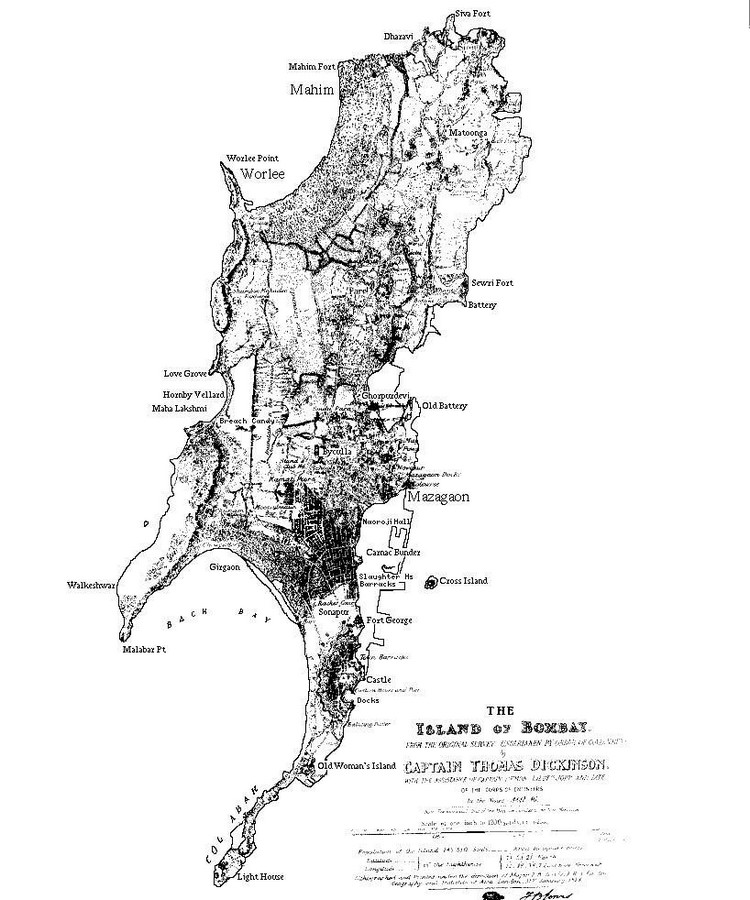

History
Dharavi is a slum area in Mumbai, Maharashtra, India. It has often been considered to be one of Dharavi is one of the most densely populated areas in the world. The Dharavi slum was founded in 1884 during the British colonial era, and grew because the expulsion of factories and residents from the peninsular city centre by the colonial government and from the migration of rural Indians into urban Mumbai. For this reason, Dharavi is currently a highly diverse settlement religiously and ethnically. In the 18th century, Dharavi was an island with a predominantly mangrove swamp. It was a sparsely populated village before the late 19th century, inhabited by Koli fishermen. Dharavi was then referred to as the village of Koliwada. Founded: These migrants, mostly from low-income backgrounds, could not afford housing in the city and were forced to settle in informal settlements, which eventually grew into slums like Dharavi. The British colonial government, which controlled Mumbai at the time, did little to address the housing needs of these migrants and instead encouraged the growth of slums as a source of cheap labor. Migration: In the 1940s, the government of India nationalized the textile mills in Mumbai, causing many people to lose their jobs. Many of these workers moved to Dharavi, which became a hub for informal industries such as pottery, leather goods, and recycling.
